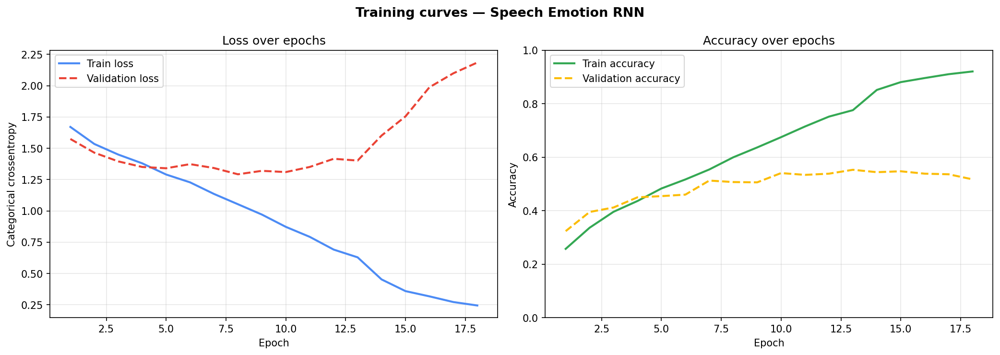
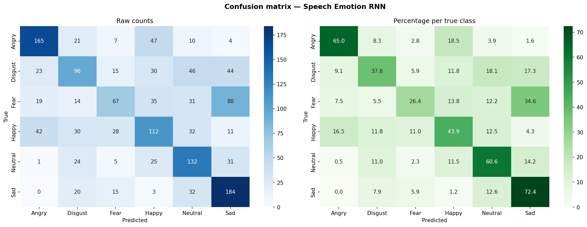

Model: Bidirectional LSTM | Dataset: CREMA-D |
Input shape: (128 timesteps × 40 MFCC features)
| Step | Time taken |
|---|---|
| Feature extraction (all files) | 70.5s |
| Preprocessing + splitting | 0.8s |
| Model training (18 epochs) | 696.7s |
| Evaluation + report | 43.4s |
| Total time | 813.1s |
| Epoch | Train loss | Train acc | Val loss | Val acc | LR | Time |
|---|---|---|---|---|---|---|
| 1 | 1.6703 | 0.2573 | 1.5743 | 0.3236 | 1.00e-03 | 40.4s |
| 2 | 1.5343 | 0.3364 | 1.4647 | 0.3953 | 1.00e-03 | 39.7s |
| 3 | 1.4498 | 0.3960 | 1.3953 | 0.4121 | 1.00e-03 | 37.3s |
| 4 | 1.3798 | 0.4364 | 1.3507 | 0.4502 | 1.00e-03 | 36.9s |
| 5 | 1.2905 | 0.4832 | 1.3404 | 0.4546 | 1.00e-03 | 38.0s |
| 6 | 1.2279 | 0.5170 | 1.3734 | 0.4602 | 1.00e-03 | 37.6s |
| 7 | 1.1353 | 0.5543 | 1.3422 | 0.5129 | 1.00e-03 | 38.6s |
| 8 | 1.0532 | 0.5998 | 1.2923 | 0.5073 | 1.00e-03 | 38.4s |
| 9 | 0.9708 | 0.6368 | 1.3199 | 0.5062 | 1.00e-03 | 39.8s |
| 10 | 0.8726 | 0.6753 | 1.3101 | 0.5409 | 1.00e-03 | 39.6s |
| 11 | 0.7927 | 0.7152 | 1.3508 | 0.5342 | 1.00e-03 | 40.0s |
| 12 | 0.6910 | 0.7522 | 1.4160 | 0.5386 | 1.00e-03 | 38.9s |
| 13 | 0.6292 | 0.7763 | 1.4019 | 0.5532 | 1.00e-03 | 37.0s |
| 14 | 0.4529 | 0.8520 | 1.6013 | 0.5442 | 5.00e-04 | 43.3s |
| 15 | 0.3595 | 0.8812 | 1.7545 | 0.5476 | 5.00e-04 | 38.6s |
| 16 | 0.3176 | 0.8964 | 1.9872 | 0.5386 | 5.00e-04 | 38.9s |
| 17 | 0.2722 | 0.9109 | 2.0987 | 0.5364 | 5.00e-04 | 37.0s |
| 18 | 0.2448 | 0.9211 | 2.1847 | 0.5174 | 5.00e-04 | 36.7s |
| Emotion | Precision | Recall | F1-Score | Test samples |
|---|---|---|---|---|
| Angry | 0.660 | 0.650 | 0.655 | 254 |
| Disgust | 0.468 | 0.378 | 0.418 | 254 |
| Fear | 0.489 | 0.264 | 0.343 | 254 |
| Happy | 0.444 | 0.439 | 0.442 | 255 |
| Neutral | 0.466 | 0.606 | 0.527 | 218 |
| Sad | 0.508 | 0.724 | 0.597 | 254 |
| macro avg | 0.506 | 0.510 | 0.497 | 1489 |
| weighted avg | 0.507 | 0.508 | 0.496 | 1489 |
Precision = of all predictions for this emotion, how many were correct.
Recall = of all real samples of this emotion, how many did the model find.
F1-Score = harmonic mean of the two (≥0.70 = good, 0.50-0.70 = ok, <0.50 = needs work).
| Emotion | File count |
|---|---|
| Angry | 1271 |
| Disgust | 1271 |
| Fear | 1271 |
| Happy | 1271 |
| Neutral | 1087 |
| Sad | 1271 |
Left: loss should go down over epochs. Right: accuracy should go up. If training is much better than validation, the model is overfitting — try more dropout.

Diagonal = correct predictions. Off-diagonal = the model confused one emotion for another.
